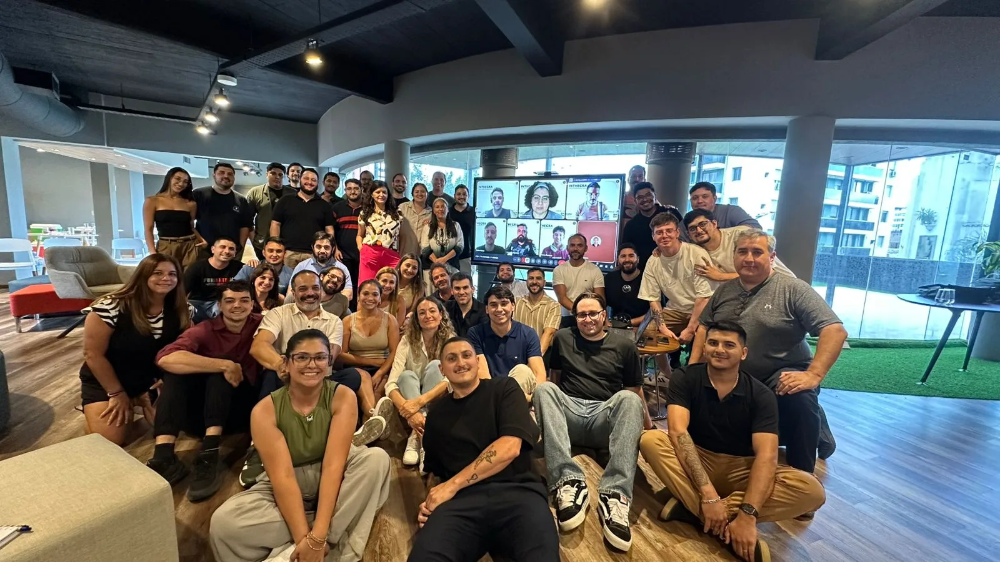
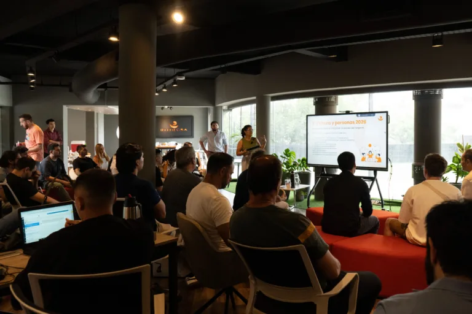
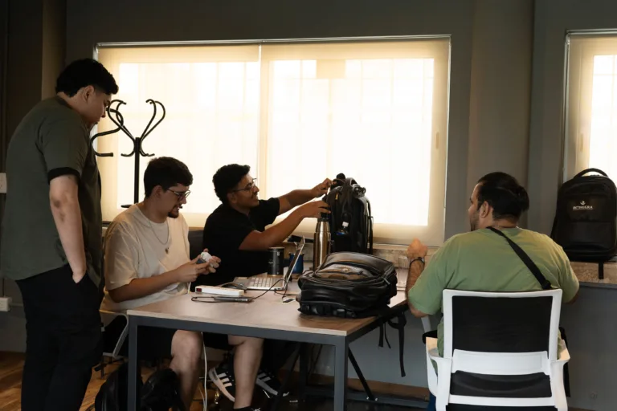
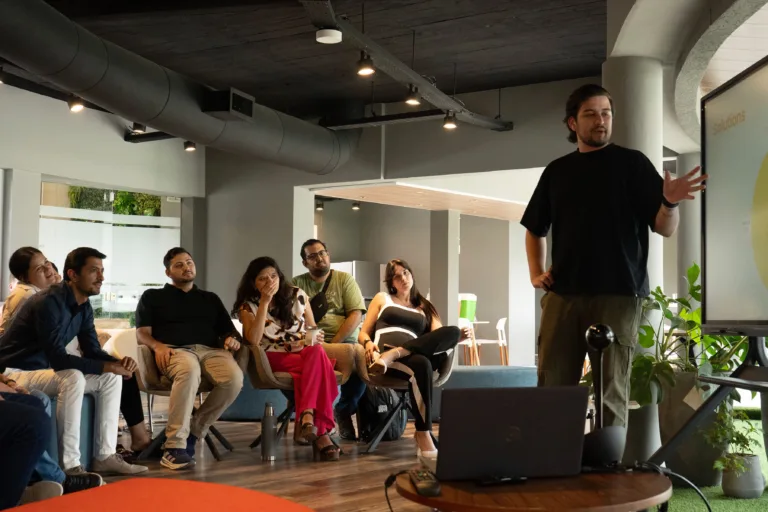
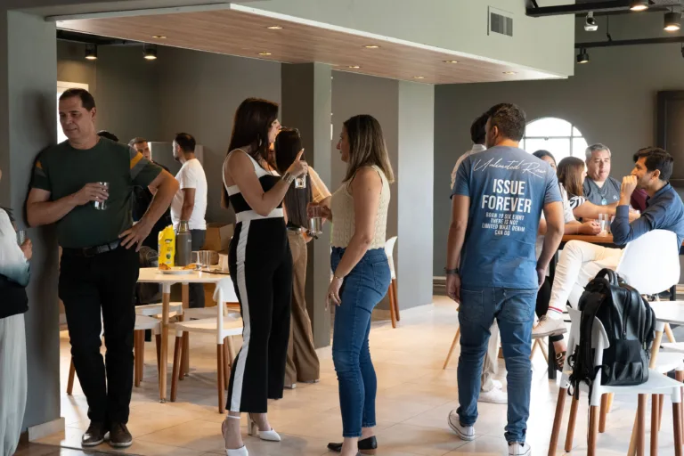
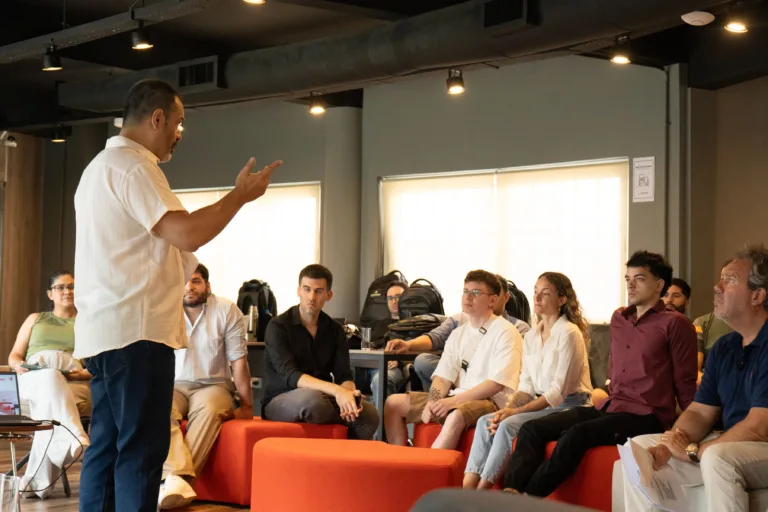

01
Equipos multidisciplinarios
Personas de negocio, producto, implementación y tecnología trabajando con el mismo contexto y el mismo objetivo.
En Inthegra, la cultura no es decorativa. Es parte de cómo entendemos el negocio, coordinamos equipos, tomamos decisiones y sostenemos implementaciones complejas con una lógica de largo plazo.
años de trayectoria en software empresarial.
profesionales senior en tecnología Oracle.
equipos conectados a productos, servicios y clientes.

Experiencia, criterio técnico, comunicación clara y trabajo colaborativo forman parte de la forma en que Inthegra entrega valor en proyectos de largo plazo.
Inthegra es una empresa de software con más de 20 años de trayectoria, especializada en el desarrollo, implementación y evolución de soluciones empresariales.
Trabajamos con organizaciones que necesitan operar con sistemas críticos, integrando tecnología, procesos y conocimiento de negocio. A lo largo de nuestra historia, construimos una forma de trabajo basada en la cercanía con el cliente, la responsabilidad en la ejecución y la mejora continua.
Nuestra forma de trabajo combina equipos conectados, contexto compartido y foco en la ejecución para transformar necesidades reales en soluciones que funcionen en la práctica.
Personas de negocio, producto, implementación y tecnología trabajando con el mismo contexto y el mismo objetivo.
Una estructura preparada para resolver tanto necesidades recurrentes como desafíos específicos de cada cliente.
Menos improvisación, más claridad. Documentación, trazabilidad y decisiones tomadas con contexto de negocio.
La cultura acompaña el crecimiento: procesos más ordenados, mejor coordinación y foco estable en la ejecución.
Nuestros principios se reflejan en cómo trabajamos todos los días: con responsabilidad, claridad, colaboración y mejora continua.
Nos hacemos responsables del resultado, no solo de la tarea.
Priorizamos la comunicación directa, la documentación y el contexto compartido para ejecutar mejor.
Trabajamos entre áreas para resolver problemas complejos con una mirada integral.
Aprendemos de cada implementación y mejoramos sobre lo construido.
La cercanía humana fortalece la confianza, la coordinación y la capacidad de sostener proyectos relevantes.
No alcanza con saber programar. La diferencia está en comprender la operación del cliente y traducirla en ejecución consistente.
El nivel técnico, la experiencia de implementación y la comprensión del negocio son parte del valor que Inthegra entrega.
No solo experiencia técnica. También criterio para sostener implementaciones, resolver desvíos y tomar decisiones con impacto real.
Una plataforma preparada para productos, soluciones y servicios que requieren seguridad, escalabilidad y continuidad.
La evolución del equipo se refleja en proyectos, aprendizaje aplicado y construcción sostenida de criterio.
La confianza institucional nace de combinar tecnología, coordinación y calidad humana en el trabajo cotidiano.
Creemos en equipos profesionales que también disfrutan trabajar juntos. Fomentamos espacios de colaboración, aprendizaje y crecimiento, donde cada persona puede desarrollarse y aportar valor real a los proyectos.





La cercanía importa y convive con responsabilidad, profesionalismo y estándares de calidad acordes a proyectos enterprise.
La historia compartida fortalece la identidad de la compañía y el sentido de pertenencia del equipo.
Celebraciones, colaboración entre equipos e instancias compartidas transmiten autenticidad y cercanía.
Si te interesa trabajar en desafíos reales, con complejidad y aprendizaje continuo, podemos conversar.
La confianza también se construye desde la forma en que las personas trabajan juntas y sostienen relaciones de largo plazo.
Combinamos experiencia, tecnología y cercanía para construir soluciones que funcionan en la realidad y sostienen relaciones de largo plazo con clientes, partners y talento.
La confianza institucional se apoya en seniority, claridad operativa y capacidad de entrega.
Desafíos concretos, aprendizaje continuo y una cultura que acompaña el crecimiento profesional.
Una página de People & Culture que refuerza marca, no solo employer branding.
La cultura se vuelve visible cuando ayuda a sostener resultados consistentes en el tiempo.